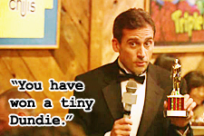

Congrats Soleil!!!
Below is a quote from a very wise man that somehow applies to life.
Your favorite cousin in Ithaca, NY,
-Brian
"Sometimes I'll start a sentence and I don't even know where its going.
I just hope I find it along the way."
-Michael Scott